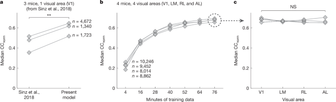
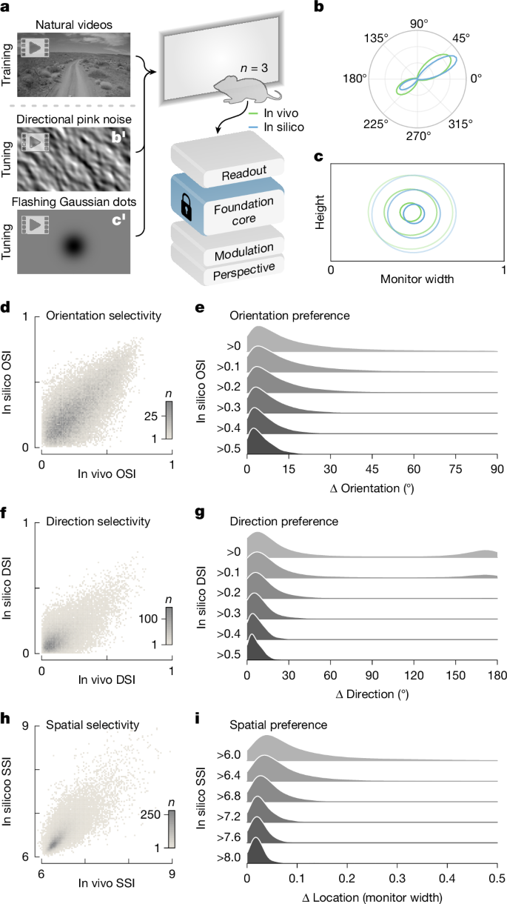
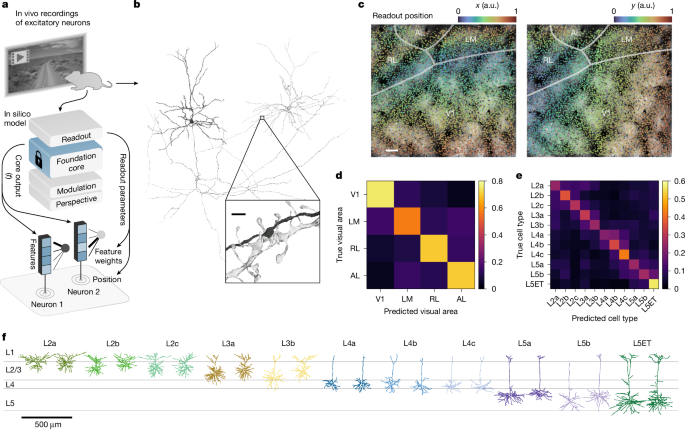

Foundation model of neural activity predicts response to new stimulus types
A foundation model trained on ~135,000 neurons across 14 mice and 6 visual cortical areas accurately predicts visual cortex responses to arbitrary natural videos and generalizes, with minimal fine-tuning, to new mice and entirely new stimulus domains (coherent motion, noise patterns, static images, Gabor patches). The model's readout weights also serve as a functional barcode that predicts anatomical cell types, dendritic morphology and synaptic connectivity in the MICrONS connectomics dataset — demonstrating that a single foundation model can bridge neural function and structure across biological scales.
Why It Matters
- First foundation model of the brain's sensory cortex. The paradigm shift — from per-animal models trained from scratch to a shared core fine-tuned for each subject — mirrors what GPT-style pretraining did for NLP, now applied to neural circuits.
- Radical gain in data efficiency. Foundation models require <30 min of natural video from a new mouse to exceed the accuracy of individual models that need >60 min, directly lowering the cost of in vivo neuroscience experiments.
- Out-of-distribution generalization. Although trained only on natural videos, the model accurately predicts responses to Gabor patches, noise and dot kinematograms — stimuli from entirely different perceptual categories — without any domain-specific training data.
- Structure–function integration. Readout feature weights predict anatomical cell types (balanced accuracy 32% vs. 9% chance) and visual areas (68% vs. 25% chance), unifying electrophysiology, two-photon imaging and nanoscale electron microscopy into one model.
- Enables in silico experimentation at scale. Once trained, the model replaces costly in vivo experiments for parametric tuning analysis, freeing experimental time and enabling hypotheses impossible to test in live animals.
Why Nature (Editorial Fit)
- Paradigm-defining breadth: the paper proposes a new modelling framework for systems neuroscience, not an incremental improvement — on par with the magnitude of change introduced by deep learning itself.
- Cross-scale mechanistic insight: it connects stimulus encoding (functional) to anatomy (structural) at the single-neuron level across millimetre-scale volumes, a challenge of global significance in neuroscience.
- Accompanied by landmark companion papers: published alongside MICrONS functional connectomics articles in the same Nature issue, constituting a coherent, high-impact body of work.
- Open science commitment: model weights, training pipelines and anatomical datasets are fully open (GitHub + BossDB/MICrONS), making findings immediately reproducible and extensible by the community.
Core Data — Sources & Volume
- Neural recordings
- Two-photon (2P) calcium imaging of ~135,000 excitatory neurons across 14 awake, behaving mice (6 female, 8 male; age 2.2–4 months), expressing GCaMP6s. 6 visual cortical areas covered: V1, LM, AL, RL, AM and PM. Foundation cohort = 8 mice; 4 new mice for out-of-distribution testing; MICrONS mouse = 1 mouse (14 sequential scans).
- Foundation training data
- More than 900 minutes of natural video responses pooled from 8 mice and ~66,000 neurons spanning multiple cortical layers (L2/3, L4, L5) and areas. Recording sessions ranged from 33–76 min each.
- Visual stimuli
- Natural videos (Sports-1M dataset); natural images; drifting Gabor filters; flashing Gaussian dots; directional pink noise (Monet); random dot kinematograms. Out-of-distribution stimuli used for testing only — zero domain-specific training data.
- MICrONS dataset
- Functional recordings of >70,000 excitatory neurons in a 1 mm3 cortical volume (V1, LM, AL, RL); paired with serial electron microscopy of ~60,000 excitatory neurons and 500 million synapses. Available at bossdb.org/project/microns-minnie.
- Anatomical labels
- 11 morphologically defined excitatory cell types (L2a–L5ET) from 16,561 unique EM-coregistered neurons (Schneider-Mizell et al., MICrONS consortium).
- Code & model weights
- Fully open: github.com/cajal/fnn (model weights); github.com/cajal/foundation (training pipeline); github.com/cajal/pipeline (recording pipeline).
| Dataset | Role | Volume / Scope | Access |
|---|---|---|---|
| In-house 2P recordings | Foundation core training + validation | 14 mice, ~135,000 neurons, 6 visual areas, >900 min neural data | cajal/pipeline |
| MICrONS functional connectomics | Structure–function prediction target | 1 mouse, >70,000 neurons, 1 mm³ volume, 14 scans | bossdb.org |
| Sports-1M video library | Natural video stimuli for model training | Large-scale video dataset (Karpathy et al., 2014) | stanford.edu |
| MICrONS EM anatomy | Cell-type and synapse prediction labels | ~60,000 excitatory neurons, 500 million synapses | microns-explorer.org |
Note: all key numbers are taken verbatim from the article text. The Author Correction (DOI 10.1038/s41586-026-10457-z) corrects edits to the Methods section; data and figures are those of the original 2025 paper.
Core Methods
- Four-module ANN architecture: Perspective (ray-tracing eye-tracking correction), Modulation (LSTM over locomotion + pupil dilation), Core (3D Conv + ConvLSTM or CvT-LSTM feedforward-recurrent), and Readout (per-neuron linear combination at learned spatial position).
- Foundation pretraining: a single shared core trained end-to-end on pooled data from 8 mice; then frozen and transferred to new subjects — only the perspective, modulation and readout modules are re-fitted per new mouse.
- Transfer learning & data efficiency: foundation models with frozen core achieve median CCnorm > 0.65 on new mice with <30 min training data; individual models need >60 min to match.
- Out-of-distribution generalization: model tested on 5 new stimulus domains (natural images, drifting Gabors, flashing Gaussian dots, directional pink noise, random dot kinematograms) with no domain-specific training data.
- Parametric tuning in silico: OSI, DSI and SSI estimated from synthetic stimuli presented to the model; median in vivo vs. in silico preferred orientation error = 4° for neurons with OSI > 0.5.
- Anatomical prediction: logistic regression on 512-dimensional readout feature weights predicts visual area (68% balanced accuracy) and cell type (32%) in MICrONS EM data.
- Training objective: Poisson negative log-likelihood (outperforms MSE by 9.6%); 4-head ensemble; 200 epochs with cosine LR schedule and warm restart.
Core Figures & Tables





Tables: 1 Extended Data Table (recording session manifest with foundation cohort membership). No main-text tables (Tables = 0 in metadata). Figures are from the original 2025 paper (s41586-025-08829-y); the 2026 Author Correction amends text in the Methods section only.